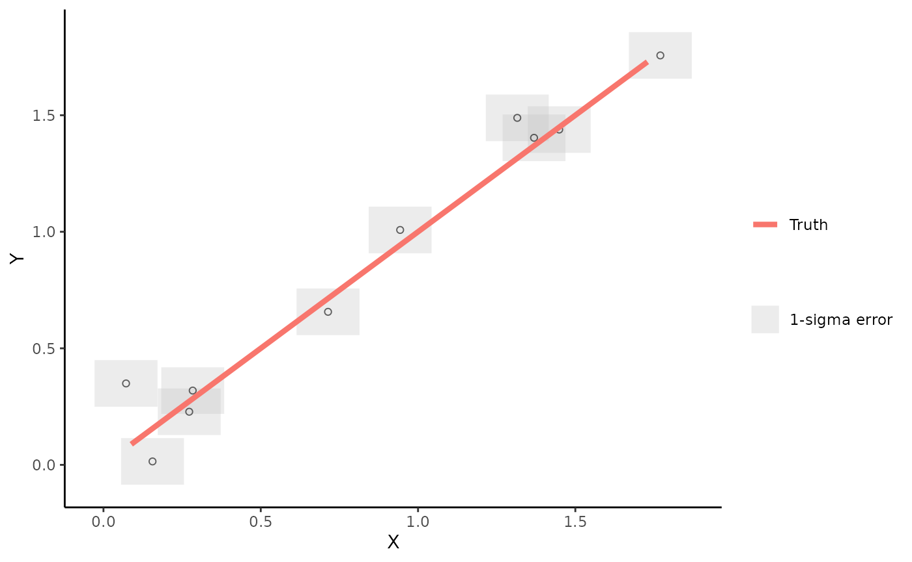
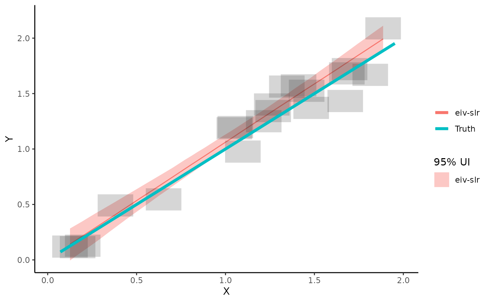
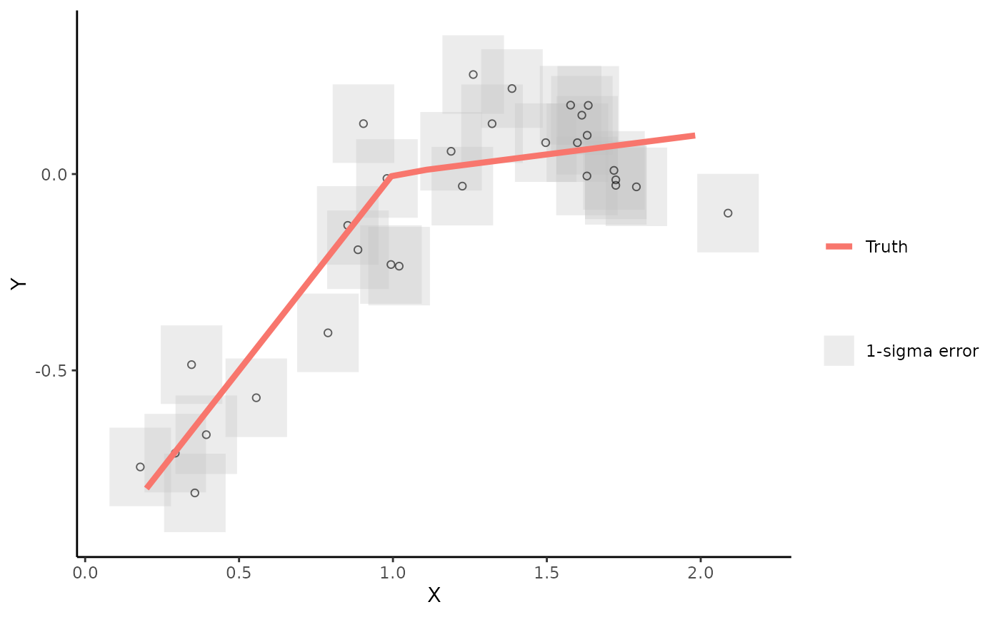
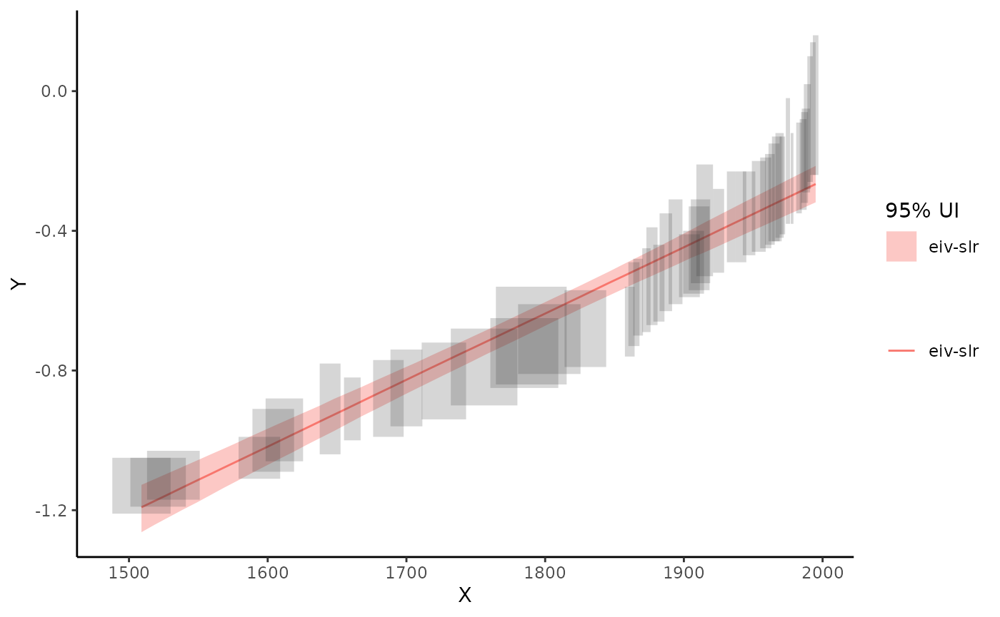
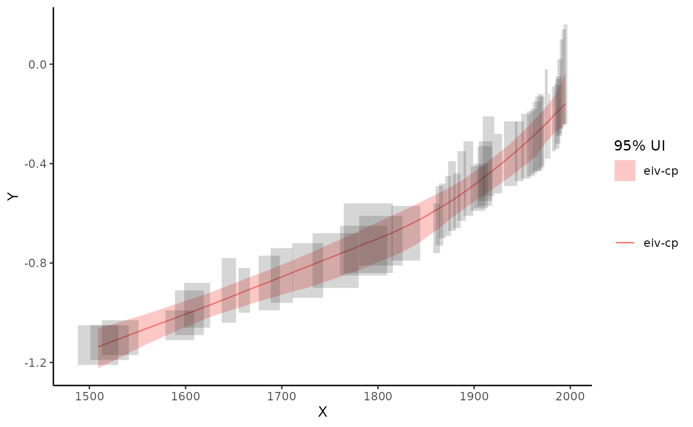
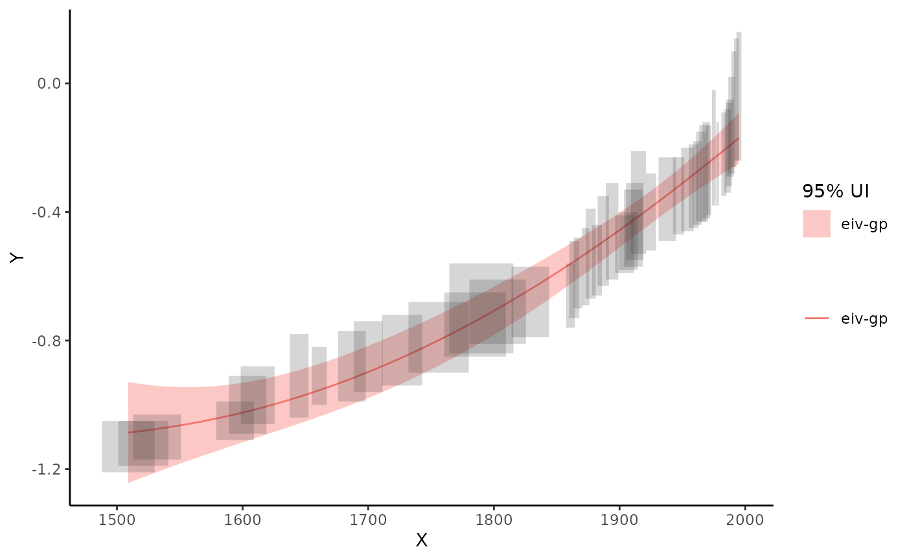

Introduction to EIVmodels
eivmodels.RmdThe goal of EIVmodels is to fit models accounting for measurement error.
Example - Simple Linear Regression
This package provides options to simulate data from different types of models where there is measurement error in both the x and y variable. We’ll start by simulating some data from a linear regression model.
dat <- sim_slr(n_sim = 10,
alpha = 0,
beta = 1,
x_err = 0.1)
dat## # A tibble: 10 × 6
## x x_err y y_err true_y true_x
## <dbl> <dbl> <dbl> <dbl> <dbl> <dbl>
## 1 1.14 0.1 0.892 0.1 1.07 1.07
## 2 0.680 0.1 0.494 0.1 0.549 0.549
## 3 0.972 0.1 0.872 0.1 0.944 0.944
## 4 0.718 0.1 0.841 0.1 0.664 0.664
## 5 1.54 0.1 1.87 0.1 1.85 1.85
## 6 1.69 0.1 1.56 0.1 1.73 1.73
## 7 0.0218 0.1 0.133 0.1 0.0165 0.0165
## 8 1.27 0.1 1.39 0.1 1.38 1.38
## 9 0.279 0.1 0.109 0.1 0.213 0.213
## 10 1.98 0.1 1.79 0.1 1.91 1.91Next we’ll plot the simulated data and we’ll add the true regression line to the plot by adding the argument add_truth = TRUE to the plot_dat() function.
plot_dat(dat,
add_truth = TRUE)
Now we’ll fit the errors-in-variables simple linear regression model to the data and see how close we get to estimating the true data generating process. We’ll start by creating a model object and specifying the argument model = "model_eiv_reg". You’ll see some messages and a progress bar pop up as the JAGS model starts to run.
mod_eiv_slr <- run_mod(dat,
model = "model_eiv_slr")## module glm loaded## Compiling model graph
## Resolving undeclared variables
## Allocating nodes
## Graph information:
## Observed stochastic nodes: 20
## Unobserved stochastic nodes: 13
## Total graph size: 240
##
## Initializing modelNow we’ll plot the model-based estimates with uncertainty. We’ll overlay the true line as a comparison.
plot_res(mod_eiv_slr,
add_truth = TRUE)
To access the data that created this plot, use:
mod_reg_res <- par_est(mod = mod_eiv_slr)
mod_reg_res$pred_res## # A tibble: 50 × 4
## x pred_y lwr_95 upr_95
## <dbl> <dbl> <dbl> <dbl>
## 1 0.0218 -0.00312 -0.289 0.292
## 2 0.0617 0.0386 -0.241 0.323
## 3 0.102 0.0798 -0.191 0.356
## 4 0.142 0.121 -0.143 0.387
## 5 0.181 0.163 -0.0932 0.419
## 6 0.221 0.204 -0.0453 0.449
## 7 0.261 0.245 0.00504 0.481
## 8 0.301 0.287 0.0553 0.516
## 9 0.341 0.328 0.105 0.550
## 10 0.381 0.368 0.153 0.583
## # … with 40 more rowsTo access a summary of the parameter estimates, use:
mod_reg_res$par_summary## # A tibble: 3 × 7
## .variable .value .lower .upper .width .point .interval
## <chr> <dbl> <dbl> <dbl> <dbl> <chr> <chr>
## 1 alpha -0.0257 -0.317 0.275 0.95 median qi
## 2 beta 1.03 0.762 1.29 0.95 median qi
## 3 sigma 0.156 0.0165 0.373 0.95 median qiExample - Using real data
The package contains a dataset called NJ_CC which is subset of a sea level reconstruction from New Jersey, USA. Note the format of the dataset. This is the format you should use for any data you want to apply these models to.
EIVmodels::NJ_CC## # A tibble: 50 × 4
## x y y_err x_err
## <dbl> <dbl> <dbl> <dbl>
## 1 1509 -1.13 0.08 21
## 2 1521 -1.12 0.07 20
## 3 1532 -1.1 0.07 19
## 4 1594 -1.05 0.06 15
## 5 1604 -1 0.09 15
## 6 1612 -0.97 0.09 13.5
## 7 1645 -0.91 0.13 7.5
## 8 1661 -0.91 0.09 6
## 9 1687 -0.88 0.11 11
## 10 1700 -0.85 0.11 11.5
## # … with 40 more rowsLet’s plot the data
plot_dat(NJ_CC)
EIV simple linear regression
Let’s fit the EIV simple linear regression model. With these data its a good idea to scale the age data. Dividing my 1000 is useful here, as the relative sea level data (\(y\)) is in metres, dividing by 1000 means the slope (rate of change) is still easily interpreted in relation to the original scale of the data. In this case the slope can be interpreted in mm/yr.
mod_eiv_slr <- run_mod(NJ_CC,
model = "model_eiv_slr",
scale_factor = 1000)## Compiling model graph
## Resolving undeclared variables
## Allocating nodes
## Graph information:
## Observed stochastic nodes: 100
## Unobserved stochastic nodes: 53
## Total graph size: 582
##
## Initializing modelLet’s get the parameter estimates
mod_reg_res <- par_est(mod = mod_eiv_slr)
mod_reg_res$par_summary## # A tibble: 3 × 7
## .variable .value .lower .upper .width .point .interval
## <chr> <dbl> <dbl> <dbl> <dbl> <chr> <chr>
## 1 alpha -4.07 -4.45 -3.68 0.95 median qi
## 2 beta 1.91 1.69 2.12 0.95 median qi
## 3 sigma 0.0138 0.000640 0.0479 0.95 median qiBased on this model, the rate of sea level change is 1.9 mm/yr (95% UI: 1.7 to 2.1 mm/yr)
Now, let’s visualise the results
plot_res(mod_eiv_slr)
EIV change-point linear regression
Let’s fit the EIV change point linear regression model instead. All we need to do is change the model argument.
mod_eiv_cp1 <- run_mod(NJ_CC,
model = "model_eiv_cp1",
scale_factor = 1000)## Compiling model graph
## Resolving undeclared variables
## Allocating nodes
## Graph information:
## Observed stochastic nodes: 100
## Unobserved stochastic nodes: 55
## Total graph size: 986
##
## Initializing modelLet’s get the parameter estimates
mod_cp_res <- par_est(mod = mod_eiv_cp1)
mod_cp_res$par_summary## # A tibble: 5 × 8
## .variable `1:2` .value .lower .upper .width .point .interval
## <chr> <int> <dbl> <dbl> <dbl> <dbl> <chr> <chr>
## 1 alpha NA -0.602 -0.920 -0.338 0.95 median qi
## 2 beta 1 1.50 0.796 1.89 0.95 median qi
## 3 beta 2 3.57 2.23 10.5 0.95 median qi
## 4 cp NA 1.87 1.71 1.97 0.95 median qi
## 5 sigma NA 0.0125 0.000588 0.0422 0.95 median qiNow, let’s visualise the results
plot_res(mod_eiv_cp1)
EIV Integrated Gaussian Process
Let’s fit the EIV integrated Gaussian process model. This is a much richer model and will take longer to run than the others. However, an advantage is that it provides the underlying rate process as well as the sea level process over time.
mod_eiv_igp <- run_mod(NJ_CC,
model = "model_eiv_igp",
scale_factor = 1000)Let’s visualise the results
plot_res(mod_eiv_igp)
Let’s look at the output that creates these results plots
mod_igp_res <- par_est(mod = mod_eiv_igp)
mod_igp_res$pred_res## # A tibble: 50 × 7
## x pred_y lwr_95 upr_95 rate_y rate_lwr_95 rate_upr_95
## <dbl> <dbl> <dbl> <dbl> <dbl> <dbl> <dbl>
## 1 1509 -1.13 -1.22 -1.04 0.982 -0.110 2.00
## 2 1519. -1.12 -1.20 -1.04 1.02 -0.00572 2.00
## 3 1529. -1.11 -1.19 -1.03 1.04 0.0684 1.99
## 4 1539. -1.10 -1.17 -1.03 1.07 0.157 1.95
## 5 1549. -1.09 -1.16 -1.02 1.10 0.244 1.96
## 6 1559. -1.08 -1.14 -1.01 1.12 0.305 1.93
## 7 1569. -1.07 -1.12 -1.00 1.16 0.373 1.94
## 8 1578. -1.06 -1.11 -0.995 1.19 0.448 1.94
## 9 1588. -1.04 -1.10 -0.986 1.21 0.567 1.94
## 10 1598. -1.03 -1.08 -0.974 1.26 0.631 1.94
## # … with 40 more rows